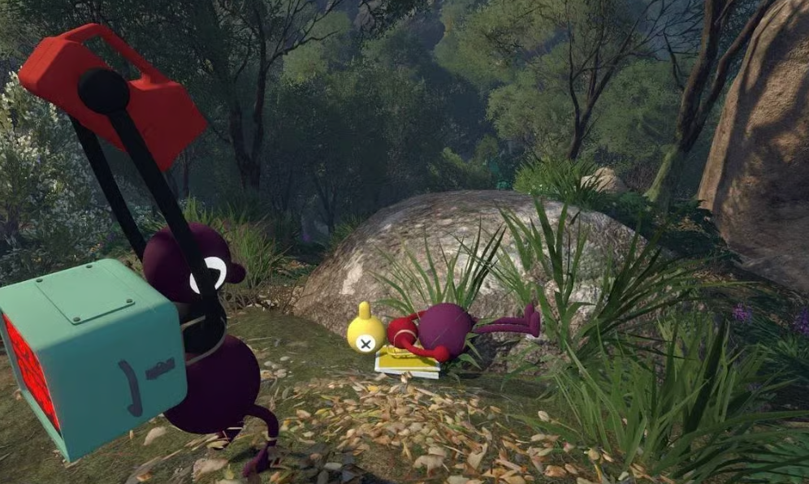

Quick answer: The train route comes after your group reaches the wider island. The Blue Tower, its prize requirement and the prepared key are the important checkpoints.

Community gameplay screenshot supplied by the site owner. This independent guide is not affiliated with House House or Panic.
Spoiler-light route
- Use the colored towers as your primary landmarks.
- Bring the required puzzle prizes to the Blue Tower progression point.
- Follow the key route carefully; an unfinished key will not open its destination.
Team roles
- Keep one person responsible for the key or progression item.
- Send a scout to identify the next landmark, then confirm the route over voice or text.
- Use the map once unlocked to name stations and avoid repeated wandering.
After trains unlock
- Learn the station sequence before splitting far apart.
- Use stations as planned rendezvous points.
- Return to skipped puzzle areas with a faster, clearer route.
Official sources
Release, platform, player-count, hosting and crossplay facts are checked against the official Big Walk FAQ and the official Steam page. Last checked August 27, 2026.